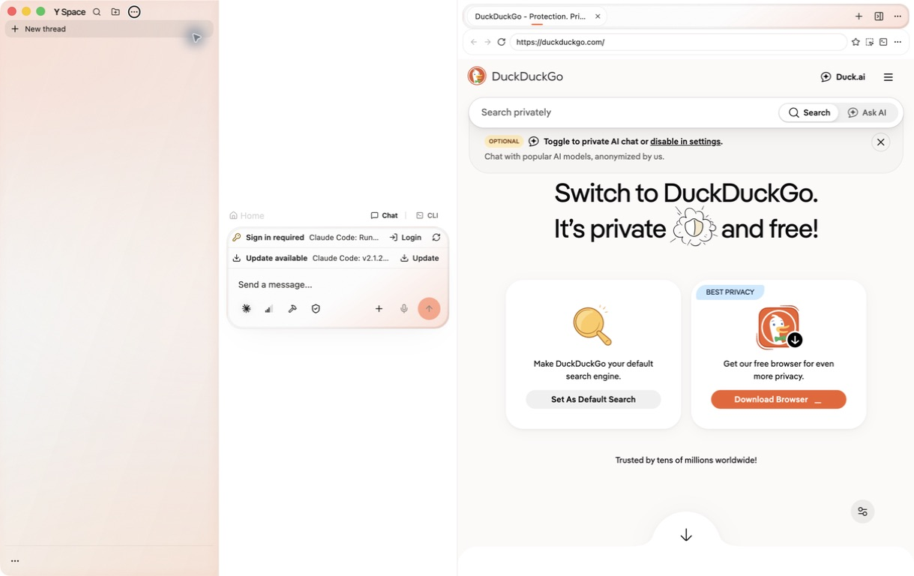
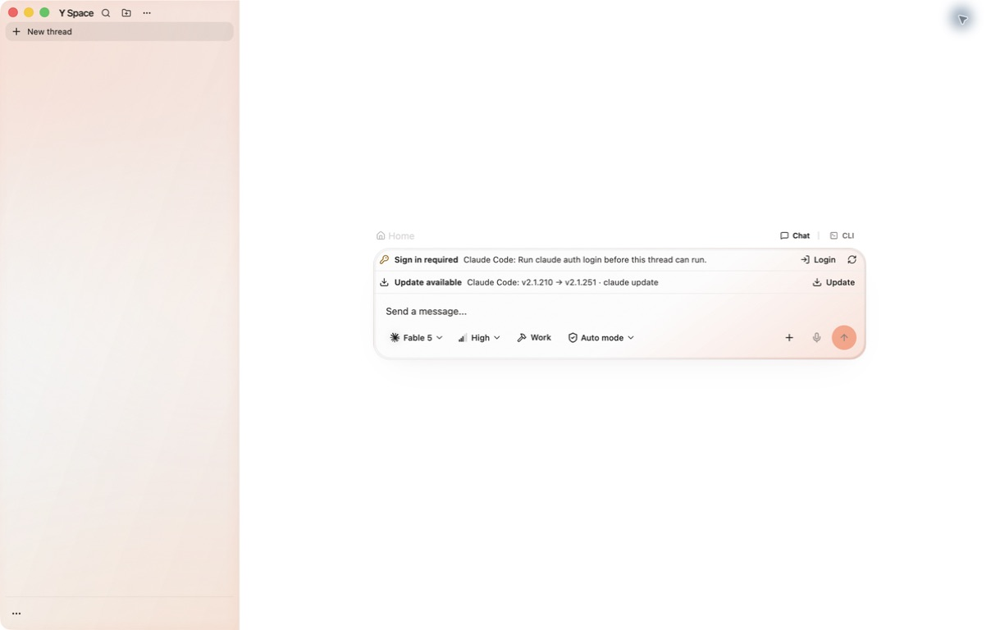
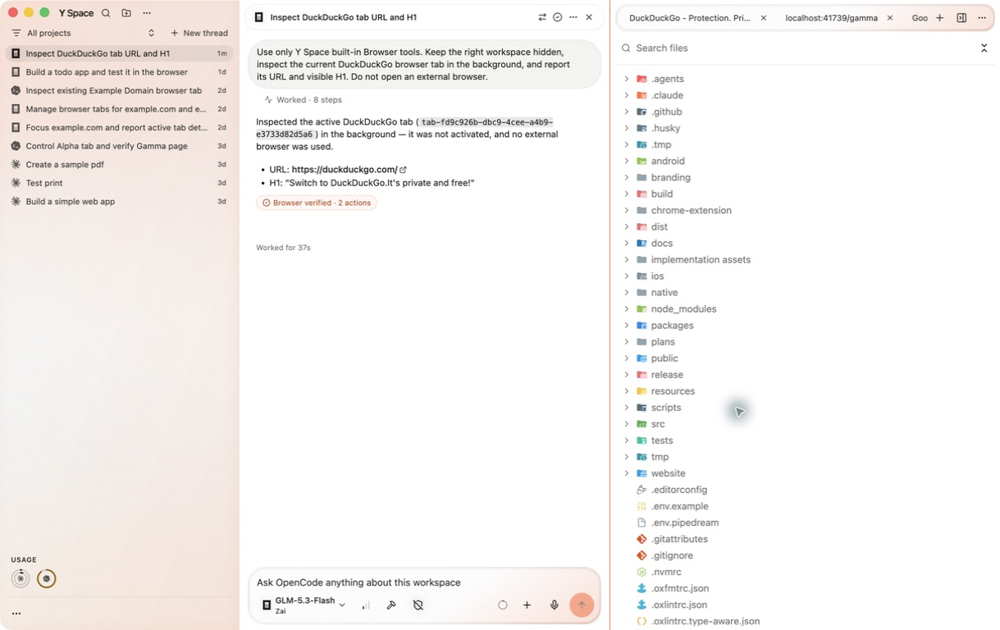
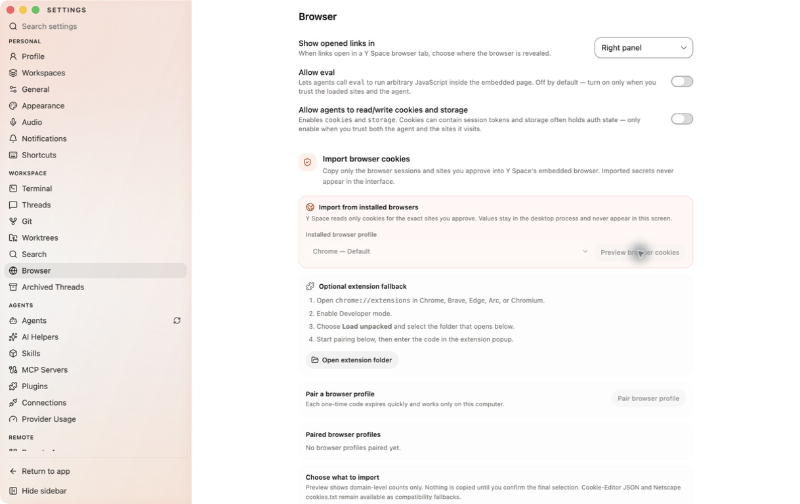

Outcome
PASS
All five acceptance flows and the complete automated suite passed.
One global tab strip now creates independent Browser peers, opens tools as peer tabs, starts at a true 50/50 split, hides completely without disabling browser automation, and offers privacy-scoped cookie import from installed browsers.
A visible + menu creates Browser peers or focuses Files, Git, Usage, and Notes in the single global tab strip.
Yes. Exact resident Browser targets remain available to agents without forcing the right workspace back on screen.
The macOS build is ad-hoc signed and verified, but intentionally unsigned by a Developer ID and not notarized.
Every new Browser page is a new global peer. Singleton tools focus their existing tab instead of duplicating it.
A fresh desktop profile opens at half the window, supports drag and keyboard resize, persists the choice, and keeps narrow overlay behavior.
The top-right action fully removes the workspace visually while the Browser service and exact agent target stay alive.
A one-time post-onboarding prompt asks first. Manual import remains available from Add tab and the Browser toolbar.
Chrome, Brave, Edge, Chromium, Arc, and Firefox profiles can be previewed on macOS without a browser extension.
Only exact approved origins are read. Raw values, paths, passwords, and keychain details stay in the main process and temporary data is cleared.




y-space-tab-plus-split-cookies
Base: fork/y-space-popup-frost@07e438a. Delivery commit is this branch’s
pushed HEAD. No PR or merge was requested.
release/Y-Space-1.6.6-arm64.dmg
SHA-256: 18da987d…e0cde0b. Ad-hoc signature verification passed.
Ready for user acceptance testing.
The optional extension/file importer remains labeled as a fallback; deleting that legacy path requires explicit approval.
See qa-e2e-tests.json for the five passed E2E cases, process launch invariant, artifact hashes, security boundaries, and screenshot references.
See pass-criteria.md for the original acceptance contract.
One loaded suite attempt hit the repository’s existing 100ms unresponsive-MCP pid-file timing variance. That six-test file passed immediately in isolation, then the unchanged full source passed 946 files and 11,154 tests. The harmless JSDOM canvas warnings remain unchanged.
Chromium databases are copied with WAL/SHM sidecars, decrypted with the macOS Safe Storage key, validated against SHA-256 host digests, normalized, filtered to the exact approved origin, and capped. Firefox imports use the same origin and count boundaries. Caches and temporary copies are cleared on commit, cancellation, expiry, and error.
Hidden automation resolves only the exact resident Browser page. It does not select a sibling page, create a replacement, reveal the workspace, or invoke an external browser. Extracted Browser windows still focus explicitly when the user has chosen that mode.